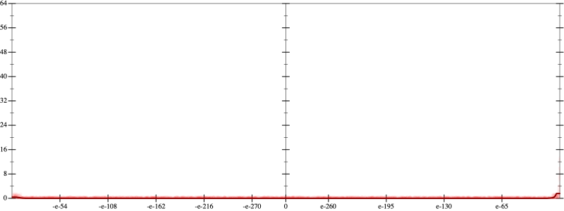
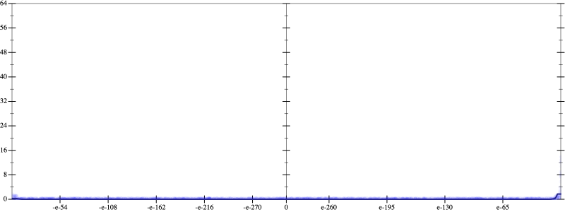
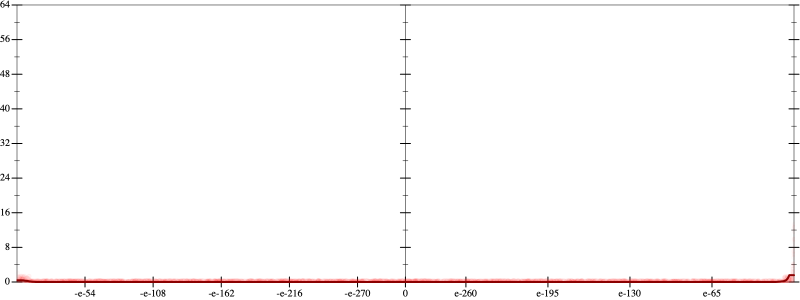
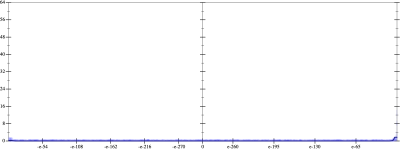

Initial program 0.0
\[\left(\left(\left(\left(\left(\left(\left(\left(\left(\left(\left(\left(\left(\left(\left(\left(\left(1.0 + -37.0 \cdot x\right) + 333.0 \cdot \left(x \cdot x\right)\right) + -1295.0 \cdot \left(\left(x \cdot x\right) \cdot x\right)\right) + 2751.875 \cdot \left(\left(\left(x \cdot x\right) \cdot x\right) \cdot x\right)\right) + -3632.475 \cdot \left(\left(\left(\left(x \cdot x\right) \cdot x\right) \cdot x\right) \cdot x\right)\right) + 3228.866667 \cdot \left(\left(\left(\left(\left(x \cdot x\right) \cdot x\right) \cdot x\right) \cdot x\right) \cdot x\right)\right) + -2042.752381 \cdot \left(\left(\left(\left(\left(\left(x \cdot x\right) \cdot x\right) \cdot x\right) \cdot x\right) \cdot x\right) \cdot x\right)\right) + 957.540179 \cdot \left(\left(\left(\left(\left(\left(\left(x \cdot x\right) \cdot x\right) \cdot x\right) \cdot x\right) \cdot x\right) \cdot x\right) \cdot x\right)\right) + -342.823027 \cdot \left(\left(\left(\left(\left(\left(\left(\left(x \cdot x\right) \cdot x\right) \cdot x\right) \cdot x\right) \cdot x\right) \cdot x\right) \cdot x\right) \cdot x\right)\right) + 95.990448 \cdot \left(\left(\left(\left(\left(\left(\left(\left(\left(x \cdot x\right) \cdot x\right) \cdot x\right) \cdot x\right) \cdot x\right) \cdot x\right) \cdot x\right) \cdot x\right) \cdot x\right)\right) + -21.419356 \cdot \left(\left(\left(\left(\left(\left(\left(\left(\left(\left(x \cdot x\right) \cdot x\right) \cdot x\right) \cdot x\right) \cdot x\right) \cdot x\right) \cdot x\right) \cdot x\right) \cdot x\right) \cdot x\right)\right) + 3.867384 \cdot \left(\left(\left(\left(\left(\left(\left(\left(\left(\left(\left(x \cdot x\right) \cdot x\right) \cdot x\right) \cdot x\right) \cdot x\right) \cdot x\right) \cdot x\right) \cdot x\right) \cdot x\right) \cdot x\right) \cdot x\right)\right) + -0.572098 \cdot \left(\left(\left(\left(\left(\left(\left(\left(\left(\left(\left(\left(x \cdot x\right) \cdot x\right) \cdot x\right) \cdot x\right) \cdot x\right) \cdot x\right) \cdot x\right) \cdot x\right) \cdot x\right) \cdot x\right) \cdot x\right) \cdot x\right)\right) + 0.070053 \cdot \left(\left(\left(\left(\left(\left(\left(\left(\left(\left(\left(\left(\left(x \cdot x\right) \cdot x\right) \cdot x\right) \cdot x\right) \cdot x\right) \cdot x\right) \cdot x\right) \cdot x\right) \cdot x\right) \cdot x\right) \cdot x\right) \cdot x\right) \cdot x\right)\right) + -0.007161 \cdot \left(\left(\left(\left(\left(\left(\left(\left(\left(\left(\left(\left(\left(\left(x \cdot x\right) \cdot x\right) \cdot x\right) \cdot x\right) \cdot x\right) \cdot x\right) \cdot x\right) \cdot x\right) \cdot x\right) \cdot x\right) \cdot x\right) \cdot x\right) \cdot x\right) \cdot x\right)\right) + 0.000615 \cdot \left(\left(\left(\left(\left(\left(\left(\left(\left(\left(\left(\left(\left(\left(\left(x \cdot x\right) \cdot x\right) \cdot x\right) \cdot x\right) \cdot x\right) \cdot x\right) \cdot x\right) \cdot x\right) \cdot x\right) \cdot x\right) \cdot x\right) \cdot x\right) \cdot x\right) \cdot x\right) \cdot x\right)\right) + -4.5 \cdot 10^{-05} \cdot \left(\left(\left(\left(\left(\left(\left(\left(\left(\left(\left(\left(\left(\left(\left(\left(x \cdot x\right) \cdot x\right) \cdot x\right) \cdot x\right) \cdot x\right) \cdot x\right) \cdot x\right) \cdot x\right) \cdot x\right) \cdot x\right) \cdot x\right) \cdot x\right) \cdot x\right) \cdot x\right) \cdot x\right) \cdot x\right)\right) + 3 \cdot 10^{-06} \cdot \left(\left(\left(\left(\left(\left(\left(\left(\left(\left(\left(\left(\left(\left(\left(\left(\left(x \cdot x\right) \cdot x\right) \cdot x\right) \cdot x\right) \cdot x\right) \cdot x\right) \cdot x\right) \cdot x\right) \cdot x\right) \cdot x\right) \cdot x\right) \cdot x\right) \cdot x\right) \cdot x\right) \cdot x\right) \cdot x\right) \cdot x\right)\]
Applied simplify0.0
\[\leadsto \color{blue}{\left(\left(-4.5 \cdot 10^{-05} \cdot x\right) \cdot \left(\left(\left(\left(\left(x \cdot x\right) \cdot \left(x \cdot x\right)\right) \cdot \left(\left(x \cdot x\right) \cdot \left(x \cdot x\right)\right)\right) \cdot \left(\left(x \cdot x\right) \cdot \left(x \cdot x\right)\right)\right) \cdot \left(\left(x \cdot x\right) \cdot \left(x \cdot x\right)\right)\right) + \left(\left(\left(\left(\left(x \cdot x\right) \cdot \left(x \cdot x\right)\right) \cdot \left(\left(x \cdot x\right) \cdot \left(x \cdot x\right)\right)\right) \cdot \left(\left(x \cdot x\right) \cdot \left(x \cdot x\right)\right)\right) \cdot \left(\left(x \cdot x\right) \cdot \left(x \cdot x\right)\right)\right) \cdot \left(\left(x \cdot x\right) \cdot 3 \cdot 10^{-06}\right)\right) + \left(\left(\left(\left(\left(\left(2751.875 \cdot x\right) \cdot {x}^{3} + \left(-3632.475 \cdot x\right) \cdot \left(\left(x \cdot x\right) \cdot \left(x \cdot x\right)\right)\right) + \left(\left(\left(x \cdot x\right) \cdot \left(x \cdot -1295.0\right) + 1.0\right) + x \cdot \left(-37.0 + x \cdot 333.0\right)\right)\right) + \left(\left(\left(x \cdot x\right) \cdot \left(x \cdot x\right)\right) \cdot \left(\left(x \cdot x\right) \cdot 3228.866667\right) + \left(\left({x}^{3} \cdot {x}^{3}\right) \cdot \left(\left(x \cdot x\right) \cdot 957.540179\right) + \left(-2042.752381 \cdot x\right) \cdot \left({x}^{3} \cdot {x}^{3}\right)\right)\right)\right) + \left(\left(\left(\left(\left(x \cdot x\right) \cdot \left(x \cdot x\right)\right) \cdot \left(\left(x \cdot x\right) \cdot \left(x \cdot x\right)\right)\right) \cdot \left(x \cdot -342.823027\right) + \left(\left(\left(x \cdot x\right) \cdot \left(x \cdot x\right)\right) \cdot \left(\left(x \cdot x\right) \cdot \left(x \cdot x\right)\right)\right) \cdot \left(\left(x \cdot x\right) \cdot 95.990448\right)\right) + \left(\left(\left({x}^{3} \cdot {x}^{3}\right) \cdot {x}^{3}\right) \cdot \left(\left(x \cdot x\right) \cdot -21.419356\right) + \left(\left({x}^{3} \cdot {x}^{3}\right) \cdot \left(\left(x \cdot x\right) \cdot \left(x \cdot x\right)\right)\right) \cdot \left(\left(x \cdot x\right) \cdot 3.867384\right)\right)\right)\right) + \left(\left(\left(\left(\left(\left(x \cdot x\right) \cdot \left(x \cdot x\right)\right) \cdot \left(\left(x \cdot x\right) \cdot \left(x \cdot x\right)\right)\right) \cdot \left(\left(x \cdot x\right) \cdot \left(x \cdot x\right)\right)\right) \cdot \left(\left(x \cdot x\right) \cdot 0.070053\right) + \left(\left(\left(\left(x \cdot x\right) \cdot \left(x \cdot x\right)\right) \cdot \left(\left(x \cdot x\right) \cdot \left(x \cdot x\right)\right)\right) \cdot \left(\left(x \cdot x\right) \cdot \left(x \cdot x\right)\right)\right) \cdot \left(x \cdot -0.572098\right)\right) + \left(\left(\left(\left({x}^{3} \cdot {x}^{3}\right) \cdot \left(\left(x \cdot x\right) \cdot \left(x \cdot x\right)\right)\right) \cdot \left(\left(x \cdot x\right) \cdot \left(x \cdot x\right)\right)\right) \cdot \left(\left(x \cdot x\right) \cdot 0.000615\right) + \left(-0.007161 \cdot x\right) \cdot \left(\left(\left({x}^{3} \cdot {x}^{3}\right) \cdot \left(\left(x \cdot x\right) \cdot \left(x \cdot x\right)\right)\right) \cdot \left(\left(x \cdot x\right) \cdot \left(x \cdot x\right)\right)\right)\right)\right)\right)}\]
 
